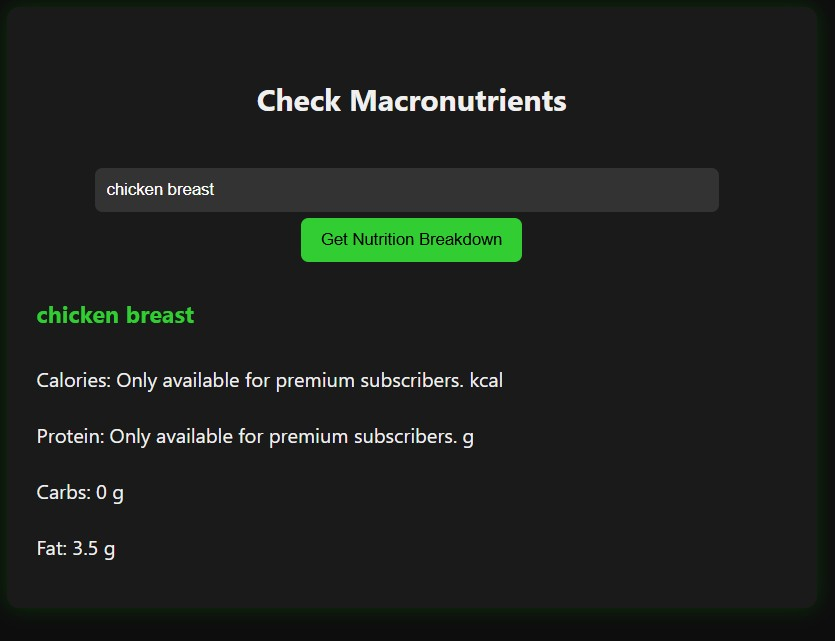

Understanding The Nutrition API
Within the Macronutrient Calculator page, a user may simply enter the name of a food or supplement. Once satisfied, they can hit the "Get Nutrition Breakdown" button to see a populated result of available nutrition data for that item. Please note that the API call does limit some information.
